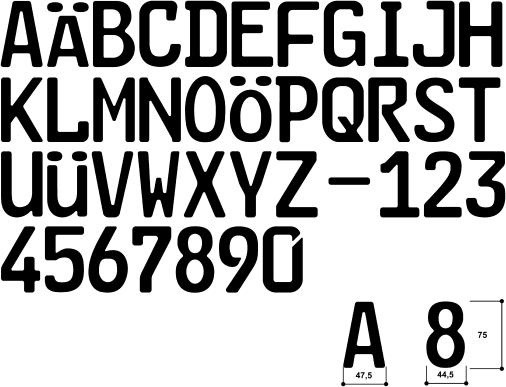
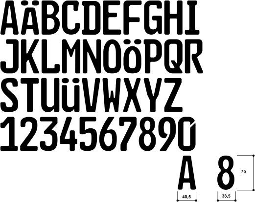
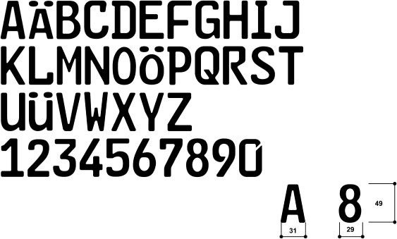
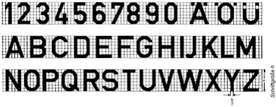
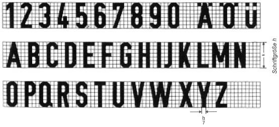
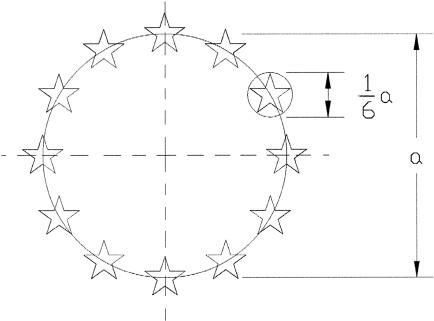
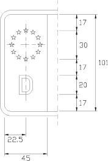
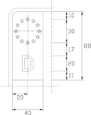
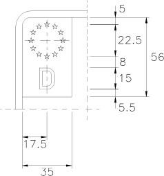

- 1.
Abmessungen
Die Maße der Kennzeichenschilder betragen für:
- a)
einzeilige Kennzeichen: Größtmaß der Breite: 520 mm, Höhe: 110 mm
- b)
zweizeilige Kennzeichen: Größtmaß der Breite: 340 mm, bei zwei- und dreirädrigen Kraftfahrzeugen 280 mm, Höhe: 200 mm
- c)
Kraftradkennzeichen: Mindest-/Größtmaß der Breite: 180 mm/220 mm, Höhe: 200 mm
- d)
verkleinerte zweizeilige Kennzeichen: Größtmaß der Breite: 255 mm, Höhe: 130 mm.
Verkleinerte zweizeilige Kennzeichen dürfen nur für Leichtkrafträder sowie für Fahrzeuge nach § 12 Absatz 6 Nummer 1 zugeteilt werden.
- 2.
Schrift
- 2.1
Beschriftung (fälschungserschwerende Schrift – FE-Schrift –)
Die Beschriftung muss den Schriftmustern „Schrift für Kfz-Kennzeichen“ entsprechen. Die Schriftmuster können bei der Bundesanstalt für Straßenwesen, Postfach 10 01 50, 51401 Bergisch Gladbach, bezogen werden. Der waagerechte Abstand der Beschriftung einschließlich der Plaketten zum schwarzen, grünen oder roten Rand, zum Euro-Feld oder zum Feld, in dem der Betriebszeitraum oder das Ablaufdatum angegeben ist, muss auf beiden Seiten gleich sein. Bei der Fertigung der Kennzeichen dürfen die nachstehenden Toleranzen nicht über- oder unterschritten werden.
- 2.1.1
einzeilige und zweizeilige Kennzeichen:
- a)
Schrifthöhe + 2,0 mm bis – 1,0 mm,
- b)
Strichbreite der Beschriftung ± 1,0 mm,
- c)
Strichbreite des Randes + 2,0 mm bis – 1,0 mm
- 2.1.2
Kraftradkennzeichen und verkleinerte zweizeilige Kennzeichen:
- a)
Schrifthöhe + 1,0 mm bis – 0,5 mm,
- b)
Strichbreite der Beschriftung ± 0,5 mm,
- c)
Strichbreite des Randes + 1,0 mm bis – 0,5 mm
- 2.2
Schriftarten
- 2.2.1
Mittelschrift 75 mm

- 2.2.2
Engschrift 75 mm

- 2.2.3
verkleinerte Mittelschrift 49 mm (nur für verkleinerte zweizeilige Kennzeichen und Kraftradkennzeichen)

- 2.3
abweichende Schrift für Kennzeichen der Bundeswehr sowie für Versicherungskennzeichen:
Die Beschriftung erfolgt nach dem anliegenden Schriftmuster der Normvorschrift DIN 1451-2:1986-02 (Verkehrsschrift) (nach dem Hilfsnetz hergestellt), und zwar grundsätzlich für Buchstaben und Zahlen in Mittelschrift. Reicht die vorgesehene Höchstlänge des Kennzeichens hierfür nicht aus oder lässt die etwa vorgeschriebene oder die vom Hersteller vorgesehene Anbringungsstelle für Kennzeichen dies nicht zu, so darf fette Engschrift verwendet werden. Bei Umlauten darf die vorgesehene Schrifthöhe nicht überschritten werden. Der waagerechte Abstand der Beschriftung einschließlich Plaketten zum schwarzen, blauen oder grünen Rand muss auf beiden Seiten gleich sein.
- 2.3.1
Mittelschrift
DIN 1451-2:1986-02

- 2.3.2
Engschrift
DIN 1451-2:1986-02

- 3.
Euro-Feld
Zwischen Euro-Feld und schwarzem Rand ist eine Lichtkante bis höchstens 2,0 mm zulässig.
Ausgestaltung des Sternenkranzes:
Die Geometrie des Sternenkranzes ergibt sich aus folgender Abbildung:

Der Durchmesser des Sternenkranzes entspricht dem Sechsfachen des Durchmessers des einzelnen Sterns. Die Ausführung des Erkennungsbuchstabens „D“ erfolgt nach der Verordnung (EG) Nr. 2411/98 vom 3. November 1998.
- 3.1
einzeiliges Kennzeichen

- 3.2
zweizeiliges Kennzeichen und Kraftradkennzeichen

- 3.3
verkleinertes zweizeiliges Kennzeichen

- 4.
Ergänzungsbestimmungen
Mehr als acht Stellen (Buchstaben und Ziffern) auf einem Kennzeichen sind unzulässig. Für einzeilige Kennzeichen oder zweizeilige Kennzeichen nach Nummer 1 Satz 1 Buchstabe b ist die Mittelschrift zu verwenden, es sei denn, die vorgesehene Höchstlänge des Kennzeichens reicht hierfür nicht aus oder die etwa vorgeschriebene oder die vom Hersteller vorgesehene Anbringungsstelle für Kennzeichen lässt dies nicht zu. In diesem Fall darf für die Buchstaben zur Unterscheidung des Verwaltungsbezirks und/oder für die Buchstaben der Erkennungsnummer und/oder die Zahlen der Erkennungsnummer jeweils die Engschrift verwendet werden. Das Kennzeichen darf nicht größer sein als die etwa vorgeschriebene oder die vom Hersteller vorgesehene Anbringungsstelle dies zulässt. In keinem Fall dürfen die zu den einzelnen Kennzeichenarten angegebenen Größtmaße überschritten werden. Ist es der Zulassungsbehörde nicht möglich, für ein Fahrzeug ein Kennzeichen zuzuteilen, das an der am Fahrzeug vorgesehenen Stelle angebracht werden kann, so hat der Halter Veränderungen am Fahrzeug vorzunehmen, die die Anbringung eines vorschriftsmäßigen Kennzeichens ermöglichen, sofern die Veränderungen nicht unverhältnismäßigen Aufwand erfordern; in Zweifelsfällen kann die Zulassungsbehörde die Vorlage eines Gutachtens eines amtlich anerkannten Sachverständigen für den Kraftfahrzeugverkehr oder eines Technischen Dienstes, der zur Prüfung von Gesamtfahrzeugen der jeweiligen Fahrzeugklasse zur Erlangung einer EU-Typgenehmigung benannt ist, verlangen. Wird in einem solchen Gutachten festgestellt, dass an einem Kraftfahrzeug die Anbringung eines vorschriftsmäßigen hinteren Kennzeichens nach Nummer 1 Satz 1 Buchstabe a, b oder c einen unverhältnismäßigen Aufwand erfordert oder technisch nicht möglich ist, kann die Zulassungsbehörde eine Ausnahme zum Führen eines verkleinerten zweizeiligen Kennzeichens nach Nummer 1 Satz 1 Buchstabe d genehmigen; dies gilt nicht, wenn durch nachträgliche Änderungen oder den Anbau von Zubehör die Anbringung eines vorschriftsmäßigen Kennzeichens nicht mehr möglich ist.
- 5.
Anerkennung von Prüfungen aus anderen Mitgliedstaaten und Vertragsstaaten
Es werden auch Prüfungen der Kennzeichenschilder anerkannt, die von den zuständigen Prüfstellen anderer Mitgliedstaaten oder anderer Vertragsstaaten entsprechend § 12 Absatz 2 Satz 3 durchgeführt und bescheinigt werden.
- 6.
Plaketten
In den auf den Kennzeichen vorgesehenen Feldern sind Plaketten anzubringen
- a)
(weggefallen)
- b)
nach § 29 Absatz 2 der Straßenverkehrs-Zulassungs-Ordnung auf dem hinteren Kennzeichen oben,
- c)
nach § 12 Absatz 3 auf dem vorderen und hinteren Kennzeichen jeweils unten.
Bei zweizeiligen Kennzeichen dürfen die Plaketten unter dem Euro-Feld angebracht werden. Auf dem Kraftradkennzeichen sind die Plaketten nach Satz 1 Buchstabe b in der Mitte links, auch unter dem Euro-Feld, und nach Satz 1 Buchstabe c in der Mitte rechts anzubringen. Auf verkleinerten zweizeiligen Kennzeichen dürfen die Plaketten nach Satz 1 Buchstabe c auch oben zwischen dem Unterscheidungszeichen und der Plakette nach Satz 1 Buchstabe b angebracht werden.

![Es wird beispielhaft ein einzeiliges Kennzeichen nebst Bemaßung dargestellt. Das Kennzeichen weist ein Größtmaß von 520 mm auf und ist 110 mm hoch. Die Ecken sind abgerundet. Der Rand des Kennzeichens ist schwarz. An der linken Seite des Kennzeichens befindet sich ein Eurofeld, wie bereits zuvor beschrieben. Rechts daneben sind die Buchstaben HH in schwarzer Mittelschrift, wie bereits zuvor beschrieben, abgebildet. Das Mindestmaß für den Abstand zwischen dem Eurofeld und den Buchstaben HH beträgt 8 mm. Neben des Buchstaben HH sind die vorgesehenen Felder für die Plaketten abgebildet. Die Felder für die Plakette sind rund. Da kleinere mit einem Durchmesser von 35 mm ist oberhalb des größeren angesiedelt, welches einen Durchmesser von 45 mm hat. Rechts daneben sind die Buchstaben HU in schwarzer Mittelschrift, wie bereits zuvor beschrieben, abgebildet. Der Abstand zwischen den Buchstaben H und U beträgt zwischen 8 bis 10 mm. In einem Abstand von 24 bis 30 mm schließt sich Zahlenfolge 199 in schwarzer Mittelschrift an. Der Abstand zwischen den einzelnen Ziffern dieser Zahlenfolge beträgt ebenfalls zwischen 8 bis 10 mm.](../normengrafiken/bgbl1_2023/j01990_0110.jpg)
![Es wird beispielhaft ein zweizeiliges Kennzeichen nebst Bemaßung dargestellt. Das Kennzeichen weist ein Größtmaß von 340 mm auf und ist 200 mm hoch. Das Größtmaß beträgt bei zwei- und dreirädrigen Kraftfahrzeugen 280 mm. Die Ecken des Kennzeichens sind abgerundet. Der Rand des Kennzeichens ist schwarz. In der ersten Zeile an der linken oberen Seite des Kennzeichens befindet sich ein Euro-Feld, wie bereits zuvor beschrieben. Rechts daneben in einem Abstand von mindestens 8 mm sind die Buchstaben HH in schwarzer Mittelschrift, wie bereits zuvor beschrieben, abgebildet. Das Mindestmaß für den Abstand zwischen dem Eurofeld und den Buchstaben HH beträgt 8 mm. Neben den Buchstaben HH sind die vorgesehenen Felder für die Plaketten abgebildet, wie zuvor beschrieben, abgebildet. Das kleinere mit einem Durchmesser von 35 mm ist oberhalb des größeren angesiedelt, welches einen Durchmesser von 45 mm hat. In der zweiten Zeile mit einem Mindestabstand von 8 mm schließen sich die Buchstaben HU in schwarzer Mittelschrift, wie bereits zuvor beschrieben, an. Der Abstand zwischen den Buchstaben H und U beträgt zwischen 8 bis 10 mm. In einem Abstand von 24 bis 30 mm schließt sich Zahlenfolge 199 in schwarzer Mittelschrift an. Der Abstand zwischen den einzelnen Ziffern dieser Zahlenfolge beträgt ebenfalls zwischen 8 bis 10 mm.](../normengrafiken/bgbl1_2023/j01990_0120.jpg)
![Es wird beispielhaft ein Kraftradkennzeichen nebst Bemaßung dargestellt. Das Kennzeichen weist ein Mindestmaß von 180 mm und ein Größtmaß von 340 mm auf und ist 200 mm hoch. Die Ecken des Kennzeichens sind abgerundet. Der Rand des Kennzeichens ist schwarz. In der ersten Zeile an der linken oberen Seite des Kennzeichens befindet sich ein Euro-Feld, wie bereits zuvor beschrieben. Rechts daneben in einem Abstand von mindestens 8 mm sind die Buchstaben EBE in schwarzer Mittelschrift, wie bereits zuvor beschrieben, abgebildet. Das Mindestmaß für den Abstand zwischen dem Eurofeld und den Buchstaben EBE beträgt 8 mm. Unterhalb der Buchstaben EBE sind die vorgesehenen Felder für die Plaketten, wie zuvor beschrieben, abgebildet. Das kleinere mit einem Durchmesser von 35 mm ist linksseitig des größeren angesiedelt, welches einen Durchmesser von 45 mm hat. In der nächsten Zeile mit einem Mindestabstand von 8 mm schließen sich die Buchstaben VM in schwarzer Mittelschrift, wie bereits zuvor beschrieben, an. Der Abstand zwischen den Buchstaben V und M beträgt zwischen 8 bis 10 mm. In einem Abstand von 15 bis 18 mm schließt sich Zahlenfolge 71 in schwarzer Mittelschrift an. Der Abstand zwischen den einzelnen Ziffern dieser Zahlenfolge beträgt ebenfalls zwischen 8 bis 10 mm.](../normengrafiken/bgbl1_2023/j01990_0130.jpg)
![Es wird beispielhaft ein verkleinertes zweizeiliges Kennzeichen nebst Bemaßung dargestellt. Das Kennzeichen weist ein Größtmaß von 255 mm auf und ist 130 mm hoch. Die Ecken des Kennzeichens sind abgerundet. Der Rand des Kennzeichens ist schwarz. In der ersten Zeile an der linken oberen Seite des Kennzeichens befindet sich ein Euro-Feld, wie bereits zuvor beschrieben. Rechts daneben in einem Abstand von mindestens 8 mm sind die Buchstaben HVL in schwarzer Mittelschrift, wie bereits zuvor beschrieben, abgebildet. Das Mindestmaß für den Abstand zwischen dem Eurofeld und den Buchstaben beträgt 8 mm. Neben den Buchstaben HVL ist in einem Abstand von 5 bis 20 mm das kleinere Feld für die Plakette mit einem Durchmesser von 35 mm abgebildet. Das größere Feld für die Plakette mit einem Durchmesser von 45 mm befindet sich unterhalb des kleineren am Ende der zweiten Zeile. In der zweiten Zeile mit einem Mindestabstand von 8 mm schließt sich der Buchstabe D in schwarzer Mittelschrift, wie bereits zuvor beschrieben, an. In einem Abstand von 15 bis 18 mm schließt sich Zahlenfolge 191 in schwarzer Mittelschrift an. Der Abstand zwischen den einzelnen Ziffern dieser Zahlenfolge beträgt zwischen 8 bis 10 mm. Daneben befindet sich in einem Abstand von 5 bis 20 mm das Plakettenfeld mit dem Durchmesser von 45 mm.](../normengrafiken/bgbl1_2023/j01990_0140.jpg)
![Es wird beispielhaft ein Wechselkennzeichen dargestellt. Das Kennzeichen besteht aus zwei Teilen, einem gemeinsamen Kennzeichenteil und einem fahrzeugbezogenen Teil. Das Größtmaß für beide Teile beträgt 520 mm. Der abgebildete gemeinsame Kennzeichenteil hat einen schwarzen Rand mit abgerundeten Kanten. Innerhalb des Kennzeichens sind von links nach rechts das Eurofeld, die Buchstaben OHZ und das Feld für die Stempelplakette angebracht. Oberhalb des Feldes für die Stempelplakette befindet sich die Kennzeichnung W. Nachfolgend sind die Buchstaben AB und die Ziffern 1 und 0 abgebildet. Die übrigen Abmessungen des dargestellten gemeinsamen Kennzeichenteils entsprechen denen der allgemeinen Kennzeichen. Daneben befinden sich zwei beispielhafte Abbildungen eines kurzen fahrzeugbezogenen Kennzeichenteils mit teilweiser Bemaßung. Dieses ist ebenso hoch wie der gemeinsame Kennzeichenteil und 60 mm breit. Die Ecken sind abgerundet. Der Rand des kurzen fahrzeugbezogenen Kennzeichenteils ist schwarz. Auf der ersten Abbildung des kurzen fahrzeugbezogenen Kennzeichenteils ist das Feld für die HU-Plakette angebracht. Darunter sind die Zeichen 2 H abgebildet. Unterhalb dessen ist in kleiner Schrift die Zeichenkombination OMZAB10 abgebildet. Die zweite Abbildung des kurzen fahrzeugbezogenen Kennzeichenteils ist identisch, mit dem Unterschied, dass unterhalb des Feldes für die HU-Plakette nur die Ziffer 2 abgebildet ist. Unterhalb dessen ist in kleiner Schrift die Zeichenkombination OMZAB10 abgebildet.](../normengrafiken/bgbl1_2023/j01990_0150.jpg)
![Es wird beispielhaft ein zweizeiliges Wechselkennzeichen dargestellt. Das Kennzeichen besteht aus zwei Teilen, einem gemeinsamen Kennzeichenteil und einem fahrzeugbezogenen Teil. Das Größtmaß für beide Teile beträgt 340 mm. Der abgebildete gemeinsame Kennzeichenteil hat einen schwarzen Rand mit abgerundeten Kanten. Innerhalb des Kennzeichens sind in einer ersten Zeile von links nach rechts das Eurofeld, die Buchstaben OHZ und das Feld für die Stempelplakette angebracht. Oberhalb des Feldes für die Stempelplakette befindet sich die Kennzeichnung W. Nachfolgend sind in der zweiten Zeile die Buchstaben CD und die Ziffern 1 und 0 abgebildet. Die übrigen Abmessungen des dargestellten gemeinsamen Kennzeichenteils entsprechen denen der allgemeinen Kennzeichen. Daneben befinden sich zwei beispielhafte Abbildungen eines kurzen fahrzeugbezogenen Kennzeichenteils mit teilweiser Bemaßung. Dieses ist ebenso hoch wie der gemeinsame Kennzeichenteil und 60 mm breit. Die Ecken sind abgerundet. Der Rand des kurzen fahrzeugbezogenen Kennzeichenteils ist schwarz. Auf der ersten Abbildung des kurzen fahrzeugbezogenen Kennzeichenteils ist das Feld für die HU-Plakette angebracht. Darunter ist die Ziffer 1 abgebildet. Unterhalb dessen ist in kleiner Schrift die Zeichenkombination OMZCD10 abgebildet. Die zweite Abbildung des kurzen fahrzeugbezogenen Kennzeichenteils ist identisch, mit dem Unterschied, dass unterhalb des Feldes für die HU-Plakette die Ziffer 2 und die Zahl 1 und der Buchstabe H abgebildet sind. Unterhalb dessen ist in kleiner Schrift die Zeichenkombination OMZCD10 abgebildet.](../normengrafiken/bgbl1_2023/j01990_0160.jpg)
![Es wird beispielhaft ein Kraftradkennzeichen in der Ausgestaltung als Wechselkennzeichen dargestellt. Das Kennzeichen besteht aus zwei Teilen, einem gemeinsamen Kennzeichenteil und einem fahrzeugbezogenen Teil. Das Mindestmaß beträgt 180 mm und das Größtmaß für beide Teile beträgt 240 mm. Der abgebildete gemeinsame Kennzeichenteil hat einen schwarzen Rand mit abgerundeten Kanten. Innerhalb des Kennzeichens sind in einer ersten Zeile von links nach rechts das Eurofeld, die Buchstaben OHZ abgebildet. Darunter befindet sich das Feld für die Stempelplakette und rechts daneben die Kennzeichnung W. Nachfolgend sind in der zweiten Zeile die Buchstaben EF und die Ziffern 1 und 0 abgebildet. Die übrigen Abmessungen des dargestellten gemeinsamen Kennzeichenteils entsprechen denen der Kraftradkennzeichen. Daneben befinden sich zwei beispielhafte Abbildungen eines kurzen fahrzeugbezogenen Kennzeichenteils mit teilweiser Bemaßung. Dieses ist ebenso hoch wie der gemeinsame Kennzeichenteil und 60 mm breit. Die Ecken sind abgerundet. Der Rand des kurzen fahrzeugbezogenen Kennzeichenteils ist schwarz. Auf der ersten Abbildung des kurzen fahrzeugbezogenen Kennzeichenteils ist das Feld für die HU-Plakette angebracht. Darunter ist die Ziffer 1 abgebildet. Unterhalb dessen ist in kleiner Schrift die Zeichenkombination OMZEF10 abgebildet. Die zweite Abbildung des kurzen fahrzeugbezogenen Kennzeichenteils ist identisch, mit dem Unterschied, dass unterhalb des Feldes für die HU-Plakette die Ziffer 1 und der Buchstabe H abgebildet ist. Unterhalb dessen ist in kleiner Schrift die Zeichenkombination OMZEF10 abgebildet.](../normengrafiken/bgbl1_2023/j01990_0170.jpg)
![Es wird beispielhaft das Kennzeichen der Bundeswehr für Leichtkrafträder und Kleinkrafträder mit Bemaßung dargestellt. Dieses hat ein Größtmaß von 240 mm und ist 130 mm hoch. Es hat einen schwarzen Rand, der leicht abgerundet ist. Auf der rechten Seite ist in einem Abstand von 10 mm zum rechten Rand und in einem Abstand von 31 mm zum oberen und unteren Rand die deutsche Flagge dargestellt. Diese ist 35 mm breit und die einzelnen 3 Balken der Flagge sind jeweils 20 mm hoch. In einem Abstand von 10 mm dazu folgt in der ersten oberen Zeile des Kennzeichens der Buchstabe Y, gefolgt von einem 25 mm langen Bindestrich, unter dem ein Feld für die Stempelplakette abgebildet ist. Das Feld für die Stempelplakette hat einen Durchmesser von 35 mm. Links daneben folgen die Zahlen 2 und 3. In der zweiten Zeile sind von links nach rechts die Zahlen 4, 5, 6 und 7 angeordnet. Die Zahlen haben jeweils eine Höhe von 49 mm und eine Breite vom 28 mm. Die Abstände zwischen den einzelnen Zahlen betragen jeweils 16 mm.](../normengrafiken/bgbl1_2023/j01990_0180.jpg)
![Es wird beispielhaft das Kennzeichen der Bundeswehr für Kleinkrafträder mit Bemaßung dargestellt. Dieses hat ein Größtmaß von 160 mm. Es hat einen schwarzen Rand, der leicht abgerundet ist. Auf der unteren rechten Seite ist die deutsche Flagge dargestellt. Diese ist 18 mm breit und die einzelnen 3 Balken der Flagge sind jeweils 18 mm hoch. In der ersten oberen Zeile des Kennzeichens folgt der Buchstabe Y, gefolgt von den Zahlen 2 und 3, abgebildet. In der zweiten Zeile sind von links nach rechts die Zahlen 4, 5 und 6 angeordnet.](../normengrafiken/bgbl1_2023/j01990_0190.jpg)
![Es wird beispielhaft das Kennzeichen der Bundeswehr für andere Krafträder mit Bemaßung dargestellt. Dieses hat ein Größtmaß von 280 mm. Es hat einen schwarzen Rand, der leicht abgerundet ist. Auf der rechten Seite ist die deutsche Flagge dargestellt. Die einzelnen 3 Balken der Flagge sind jeweils 25 mm hoch. In einem Abstand von 17 mm dazu folgt in der ersten oberen Zeile des Kennzeichens der Buchstabe Y, gefolgt von einem 25 mm langen Bindestrich, unter dem ein Feld für die Stempelplakette abgebildet ist. Das Feld für die Stempelplakette hat einen Durchmesser von 35 mm. Links daneben folgen die Zahlen 2 und 3. In der zweiten Zeile sind von links nach rechts die Zahlen 4, 5,6 und 7 angeordnet.](../normengrafiken/bgbl1_2023/j01990_0200.jpg)
![Es wird beispielhaft das einzeilige Kennzeichen der Bundeswehr für andere Kraftfahrzeuge und Anhänger mit Bemaßung dargestellt. Dieses hat ein Größtmaß von 520 mm. Es hat einen schwarzen Rand, der leicht abgerundet ist. Auf der unteren rechten Seite ist die deutsche Flagge mit einer Breite von 60 mm dargestellt. Die einzelnen 3 Balken der Flagge sind jeweils 20 mm hoch. In einem Abstand von 10 mm dazu folgt in der ersten oberen Zeile des Kennzeichens der Buchstabe Y, gefolgt von einem 25 mm langen Bindestrich, unter dem ein Feld für die Stempelplakette abgebildet ist. Links daneben folgen die Zahlen 2 bis 4 in einem Abstand von 10 mm zueinander. In einem größeren Abstand dazu schließen sich die Zahlen 5 bis 7 ebenfalls mit einem Abstand von 10 mm zueinander an.](../normengrafiken/bgbl1_2023/j01990_0210.jpg)
![Es wird beispielhaft das zweizeilige Kennzeichen der Bundeswehr für andere Kraftfahrzeuge und Anhänger mit Bemaßung dargestellt. Dieses hat ein Größtmaß von 340 mm. Es hat einen schwarzen Rand, der leicht abgerundet ist. Auf der rechten Seite ist die deutsche Flagge dargestellt. Die einzelnen 3 Balken der Flagge sind jeweils 25 mm hoch. In einem Abstand von 20 mm dazu folgt in der ersten oberen Zeile des Kennzeichens der Buchstabe Y, gefolgt von einem 25 mm langen Bindestrich, unter dem ein Feld für die Stempelplakette abgebildet ist. Das Feld für die Stempelplakette hat einen Durchmesser von 35 mm. Links daneben folgen die Zahlen 2 und 3. In der zweiten Zeile sind von links nach rechts die Zahlen 4, 5,6 und 7 angeordnet.](../normengrafiken/bgbl1_2023/j01990_0220.jpg)
![Es wird beispielhaft ein einzeiliges Oldtimerkennzeichen nebst Bemaßung dargestellt. Das Kennzeichen weist ein Größtmaß von 520 mm auf und ist 110 mm hoch. Die Ecken sind abgerundet. Der Rand des Kennzeichens ist schwarz. An der linken Seite des Kennzeichens befindet sich ein Euro-Feld, wie bereits zuvor beschrieben. Rechts daneben sind die Buchstaben MK in schwarzer Mittelschrift, wie bereits zuvor beschrieben, abgebildet. Das Mindestmaß für den Abstand zwischen dem Eurofeld und den Buchstaben MK beträgt 8 mm. Neben des Buchstaben MK sind die vorgesehenen Felder für die Plaketten abgebildet. Die Felder für die Plaketten sind rund. Das kleinere mit einem Durchmesser von 35 mm ist oberhalb des größeren angesiedelt, welches einen Durchmesser von 45 mm hat. Rechts daneben sind die Buchstaben GG in schwarzer Mittelschrift, wie bereits zuvor beschrieben, abgebildet. Der Abstand zwischen den Buchstaben beträgt zwischen 8 bis 10 mm. In einem Abstand von 20 bis 30 mm schließt sich Zahlen-Buchstabenfolge 23H in schwarzer Mittelschrift an. Der Abstand zwischen den einzelnen Ziffern beträgt ebenfalls zwischen 8 bis 10 mm. Der Abstand zwischen der 3 und dem H beträgt zwischen 20 und 30 mm.](../normengrafiken/bgbl1_2023/j01990_0230.jpg)
![Es wird beispielhaft ein zweizeiliges Oldtimerkennzeichen nebst Bemaßung dargestellt. Das Kennzeichen weist ein Größtmaß von 340 mm auf und ist 200 mm hoch. Das Größtmaß beträgt bei zwei- und dreirädrigen Kraftfahrzeugen 280 mm. Die Ecken des Kennzeichens sind abgerundet. Der Rand des Kennzeichens ist schwarz. In der ersten Zeile an der linken oberen Seite des Kennzeichens befindet sich ein Euro-Feld, wie bereits zuvor beschrieben. Rechts daneben sind die Buchstaben DD in schwarzer Mittelschrift, wie bereits zuvor beschrieben, abgebildet. Das Mindestmaß für den Abstand zwischen dem Eurofeld und den Buchstaben HH beträgt 8 mm. Neben den Buchstaben DD sind die vorgesehenen Felder für die Plaketten abgebildet, wie zuvor beschrieben, abgebildet. Das kleinere mit einem Durchmesser von 35 mm ist oberhalb des größeren angesiedelt, welches einen Durchmesser von 45 mm hat. In der zweiten Zeile mit einem Mindestabstand von 8 mm zum Rand schließen sich die Buchstaben GD in schwarzer Mittelschrift an. Der Abstand zwischen den Buchstaben G und D beträgt zwischen 8 bis 10 mm. In einem Abstand von 20 bis 30 mm (bei zwei und dreirädrige Kraftfahrzeugen 15 bis 30 mm) schließt sich die Zahlen 2und 4 an. Der Abstand zwischen den einzelnen Ziffern dieser Zahlenfolge beträgt ebenfalls zwischen 8 bis 10 mm. Abschließend ist in einem Abstand von 20 bis 30 mm (bei zwei und dreirädrige Kraftfahrzeugen 15 bis 30 mm) der Buchstabe H abgebildet.](../normengrafiken/bgbl1_2023/j01990_0240.jpg)
![Es wird beispielhaft ein Kraftradkennzeichen für Oldtimer nebst Bemaßung dargestellt. Das Kennzeichen weist ein Mindestmaß von 180 mm und ein Größtmaß von 340 mm auf und ist 200 mm hoch. Die Ecken des Kennzeichens sind abgerundet. Der Rand des Kennzeichens ist schwarz. In der ersten Zeile an der linken oberen Seite des Kennzeichens befindet sich ein Euro-Feld, wie bereits zuvor beschrieben. Rechts daneben in einem Abstand von mindestens 8 mm sind die Buchstaben ERB in schwarzer Mittelschrift, wie bereits zuvor beschrieben, abgebildet. Unterhalb der Buchstaben ERB sind die vorgesehenen Felder für die Plaketten, wie zuvor beschrieben, abgebildet. Das kleinere mit einem Durchmesser von 35 mm ist linksseitig des größeren angesiedelt, welches einen Durchmesser von 45 mm hat. In der nächsten Zeile mit einem Mindestabstand von 8 mm zum Rand schließen sich die Buchstaben PS an. Der Abstand zwischen den Buchstaben P und S beträgt zwischen 8 bis 10 mm. In einem Abstand von 14 bis 18 mm schließt sich Zahlenfolge 78 in schwarzer Mittelschrift an. Der Abstand zwischen den einzelnen Ziffern dieser Zahlenfolge beträgt ebenfalls zwischen 8 bis 10 mm. Abschließend ist in einem Abstand von 20 bis 30 mm (bei zwei und dreirädrige Kraftfahrzeugen 14 bis 18 mm) der Buchstabe H abgebildet.](../normengrafiken/bgbl1_2023/j01990_0250.jpg)
![Es wird beispielhaft ein verkleinertes zweizeiliges Oldtimerkennzeichen nebst Bemaßung dargestellt. Das Kennzeichen weist ein Größtmaß von 255 mm auf und ist 130 mm hoch. Die Ecken des Kennzeichens sind abgerundet. Der Rand des Kennzeichens ist schwarz. In der ersten Zeile an der linken oberen Seite des Kennzeichens befindet sich ein Euro-Feld, wie bereits zuvor beschrieben. Rechts daneben in einem Abstand von mindestens 6 mm sind die Buchstaben WI abgebildet. Das Mindestmaß für den Abstand zwischen den Buchstaben beträgt 8 bis 10 mm. Neben den Buchstaben ist in einem Abstand von 5 bis 20 mm das größere Feld für die Plakette mit einem Durchmesser von 45 mm abgebildet. Das kleinere Feld für die Plakette mit einem Durchmesser von 35 mm befindet sich daneben. In der zweiten Zeile mit einem Mindestabstand von 6 mm zum Rand folgen die Buchstaben Q und U. In einem Abstand von 15 bis 18 mm schließt sich Zahlenfolge 111 an. Der Abstand zwischen den einzelnen Ziffern dieser Zahlenfolge beträgt zwischen 8 bis 10 mm. Daneben befindet sich in einem Abstand von 15 bis 18 mm der Buchstabe H.](../normengrafiken/bgbl1_2023/j01990_0260.jpg)
![Es wird beispielhaft ein einzeiliges Saisonkennzeichen nebst Bemaßung dargestellt. Das Kennzeichen weist ein Größtmaß von 520 mm auf und ist 110 mm hoch. Die Ecken sind abgerundet. Der Rand des Kennzeichens ist schwarz. An der linken Seite des Kennzeichens befindet sich ein Euro-Feld, wie bereits zuvor beschrieben. Rechts daneben sind die Buchstaben HH in schwarzer Mittelschrift, wie bereits zuvor beschrieben, abgebildet. Das Mindestmaß für den Abstand zwischen dem Eurofeld und den Buchstaben HH beträgt 8 mm. Neben den Buchstaben HH sind die vorgesehenen Felder für die Plaketten abgebildet. Die Felder für die Plaketten sind rund. Das kleinere mit einem Durchmesser von 35 mm ist oberhalb des größeren angesiedelt, welches einen Durchmesser von 45 mm hat. Rechts daneben sind die Buchstaben EE in schwarzer Mittelschrift abgebildet. Der Abstand zwischen den Buchstaben beträgt zwischen 8 bis 10 mm. In einem Abstand von 24 bis 30 mm schließen sich die Zahlen 11 in schwarzer Mittelschrift an. Der Abstand zwischen den einzelnen Ziffern beträgt zwischen 8 bis 10 mm. Abschließend ist das Feld für den Betriebszeitraum angegeben. Dieses ist 30 mm breit und insgesamt 75 mm hoch. Die Ziffern 0 und 4 sind über dem Bindestrich angesiedelt und 20 mm hoch. Danach folg ein Bindestrich. Unterhalb des Bindestrichs sind die Ziffern 1 und 0 aufgeführt.](../normengrafiken/bgbl1_2023/j01990_0270.jpg)
![Es wird beispielhaft ein zweizeiliges Saisonkennzeichen nebst Bemaßung dargestellt. Das Kennzeichen weist ein Größtmaß von 340 mm auf und ist 200 mm hoch. Das Größtmaß beträgt bei zwei- und dreirädrigen Kraftfahrzeugen 280 mm. Die Ecken des Kennzeichens sind abgerundet. Der Rand des Kennzeichens ist schwarz. In der ersten Zeile an der linken oberen Seite des Kennzeichens befindet sich ein Euro-Feld, wie bereits zuvor beschrieben. Rechts daneben sind die Buchstaben CW in schwarzer Mittelschrift, wie bereits zuvor beschrieben, abgebildet. Das Mindestmaß für den Abstand zwischen dem Eurofeld und den Buchstaben beträgt 8 mm. Neben den Buchstaben CW sind die vorgesehenen Felder für die Plaketten abgebildet. Das kleinere mit einem Durchmesser von 35 mm ist oberhalb des größeren angesiedelt, welches einen Durchmesser von 45 mm hat. Abschließend ist in der ersten Zeile das Feld für den Betriebszeitraum angegeben. Dieses ist 30 mm breit und insgesamt 75 mm hoch. Die Ziffern 0 und 4 sind über dem Bindestrich angesiedelt und 20 mm hoch. Danach folgt ein Bindestrich. Unterhalb des Bindestrichs sind die Ziffern 1 und 0 aufgeführt. In der zweiten Zeile mit einem Mindestabstand von 8 mm zum Rand schließen sich die Buchstaben EE in schwarzer Mittelschrift an. Der Abstand zwischen den Buchstaben beträgt zwischen 8 bis 10 mm. In einem Abstand von 24 bis 30 mm schließt sich die Zahlen 545 an. Der Abstand zwischen den einzelnen Ziffern dieser Zahlenfolge beträgt ebenfalls zwischen 8 bis 10 mm.](../normengrafiken/bgbl1_2023/j01990_0280.jpg)
![Es wird beispielhaft ein Kraftradkennzeichen als Saisonkennzeichen nebst Bemaßung dargestellt. Das Kennzeichen weist ein Mindestmaß von 180 mm und ein Größtmaß von 340 mm auf und ist 200 mm hoch. Die Ecken des Kennzeichens sind abgerundet. Der Rand des Kennzeichens ist schwarz. In der ersten Zeile an der linken oberen Seite des Kennzeichens befindet sich ein Euro-Feld, wie bereits zuvor beschrieben. Rechts daneben in einem Abstand von mindestens 8 mm sind die Buchstaben ERB in schwarzer Mittelschrift, wie bereits zuvor beschrieben, abgebildet. Unterhalb der Buchstaben ERB sind die vorgesehenen Felder für die Plaketten abgebildet. Das kleinere mit einem Durchmesser von 35 mm ist linksseitig des größeren angesiedelt, welches einen Durchmesser von 45 mm hat. Daneben befindet sich das Feld für den Betriebszeitraum. Dieses ist 30 mm breit. Die Ziffern 0 und 4 sind 20 mm hoch und über dem Bindestrich angesiedelt. Danach folgt ein Bindestrich. Unterhalb des Bindestrichs sind die Ziffern 1 und 0, die ebenfalls 20 mm hoch sind, aufgeführt. In der nächsten Zeile mit einem Mindestabstand von 8 mm zum Rand schließen sich die Buchstaben PS an. Der Abstand zwischen den Buchstaben P und S beträgt zwischen 8 bis 10 mm. In einem Abstand von 15 bis 18 mm schließt sich Zahlenfolge 78 in schwarzer Mittelschrift an. Der Abstand zwischen den einzelnen Ziffern dieser Zahlenfolge beträgt ebenfalls zwischen 8 bis 10 mm.](../normengrafiken/bgbl1_2023/j01990_0290.jpg)
![Es wird beispielhaft ein verkleinertes zweizeiliges Saisonkennzeichen nebst Bemaßung dargestellt. Das Kennzeichen weist ein Größtmaß von 255 mm auf und ist 130 mm hoch. Die Ecken des Kennzeichens sind abgerundet. Der Rand des Kennzeichens ist schwarz. In der ersten Zeile an der linken oberen Seite des Kennzeichens befindet sich ein Euro-Feld. Rechts daneben in einem Abstand von mindestens 8 mm sind die Buchstaben HVL abgebildet. Das Mindestmaß für den Abstand zwischen den Buchstaben beträgt 8 bis 10 mm. Neben den Buchstaben ist in einem Abstand von 5 bis 20 mm das größere Feld für die Plakette mit einem Durchmesser von 45 mm abgebildet. Das kleinere Feld für die Plakette mit einem Durchmesser von 35 mm befindet sich daneben. In der zweiten Zeile mit einem Mindestabstand von 8 mm zum Rand folgen die Buchstaben D und E. In einem Abstand von 15 bis 18 mm schließt sich Zahlenfolge 119 an. Der Abstand zwischen den einzelnen Ziffern dieser Zahlenfolge beträgt zwischen 8 bis 10 mm. Daneben befindet sich in einem Abstand von mindestens 8 mm das Feld für den Betriebszeitraum. Dieses ist 30 mm breit. Die Ziffern 0 und 4 sind 20 mm hoch und über dem Bindestrich angesiedelt. Danach folgt ein Bindestrich. Unterhalb des Bindestrichs sind die Ziffern 1 und 0, die ebenfalls 20 mm hoch sind, aufgeführt.](../normengrafiken/bgbl1_2023/j01990_0300.jpg)
![Es wird beispielhaft ein einzeiliges Saisonkennzeichen für Elektrofahrzeuge nebst Bemaßung dargestellt. Das Kennzeichen weist ein Größtmaß von 520 mm auf und ist 110 mm hoch. Die Ecken sind abgerundet. Der Rand des Kennzeichens ist schwarz. An der linken Seite des Kennzeichens befindet sich ein Euro-Feld, wie bereits zuvor beschrieben. Rechts daneben sind die Buchstaben HH in schwarzer Mittelschrift, wie bereits zuvor beschrieben, abgebildet. Das Mindestmaß für den Abstand zwischen dem Eurofeld und den Buchstaben HH beträgt 8 mm. Neben den Buchstaben HH sind die vorgesehenen Felder für die Plaketten abgebildet. Die Felder für die Plaketten sind rund. Das kleinere mit einem ist oberhalb des größeren angesiedelt. Rechts daneben sind die Buchstaben EE in schwarzer Mittelschrift abgebildet. Der Abstand zwischen den Buchstaben beträgt zwischen 8 bis 10 mm. In einem Abstand von 20 bis 30 mm schließen sich die Zahl 1 und der Buchstabe E an. Der Abstand zwischen ihnen beträgt 20 bis 30 mm. Abschließend ist das Feld für den Betriebszeitraum angegeben. Dieses ist 30 mm breit. Die Ziffern 0 und 4 sind über dem Bindestrich angesiedelt. Danach folgt ein Bindestrich. Unterhalb des Bindestrichs sind die Ziffern 1 und 0 aufgeführt.](../normengrafiken/bgbl1_2023/j01990_0310.jpg)
![Es wird beispielhaft ein zweizeiliges Saisonkennzeichen für Elektrofahrzeuge nebst Bemaßung dargestellt. Das Kennzeichen weist ein Größtmaß von 340 mm auf und ist 200 mm hoch. Das Größtmaß beträgt bei zwei- und dreirädrigen Kraftfahrzeugen 280 mm. Die Ecken des Kennzeichens sind abgerundet. Der Rand des Kennzeichens ist schwarz. In der ersten Zeile an der linken oberen Seite des Kennzeichens befindet sich ein Euro-Feld, wie bereits zuvor beschrieben. Rechts daneben sind die Buchstaben CW in schwarzer Mittelschrift, wie bereits zuvor beschrieben, abgebildet. Neben den Buchstaben CW sind die vorgesehenen Felder für die Plaketten abgebildet. Das kleinere ist oberhalb des größeren angesiedelt. Abschließend ist in der ersten Zeile das Feld für den Betriebszeitraum angegeben. Die Ziffern 0 und 4 sind über dem Bindestrich angesiedelt. Danach folgt ein Bindestrich. Unterhalb des Bindestrichs sind die Ziffern 1 und 0 aufgeführt. In der zweiten Zeile mit einem Mindestabstand von 8 mm zum Rand schließen sich die Buchstaben EE in schwarzer Mittelschrift an. Der Abstand zwischen den Buchstaben beträgt zwischen 8 bis 10 mm. In einem Abstand von 20 bis 30 mm schließt sich die Zahlen 54 und der Buchstabe E an. Der Abstand zwischen der 5 und der 4 beträgt ebenfalls zwischen 8 bis 10 mm. Der Abstand zwischen der 4 und dem E beträgt 20 bis 30 mm, bei zwei- und dreirädrigen Kraftfahrzeugen 15 mm bis 30 mm.](../normengrafiken/bgbl1_2023/j01990_0320.jpg)
![Es wird beispielhaft ein Kraftradkennzeichen als Saisonkennzeichen für Elektrofahrzeuge nebst Bemaßung dargestellt. Das Kennzeichen weist ein Mindestmaß von 180 mm und ein Größtmaß von 340 mm auf und ist 200 mm hoch. Die Ecken des Kennzeichens sind abgerundet. Der Rand des Kennzeichens ist schwarz. In der ersten Zeile an der linken oberen Seite des Kennzeichens befindet sich ein Euro-Feld, wie bereits zuvor beschrieben. Rechts daneben in einem Abstand von mindestens 8 mm sind die Buchstaben ERB in schwarzer Mittelschrift, wie bereits zuvor beschrieben, abgebildet. Unterhalb der Buchstaben ERB sind die vorgesehenen Felder für die Plaketten abgebildet. Das kleinere mit einem Durchmesser von 35 mm ist linksseitig des größeren angesiedelt, welches einen Durchmesser von 45 mm hat. Daneben befindet sich das Feld für den Betriebszeitraum. Dieses ist 30 mm breit. Die Ziffern 0 und 4 sind 20 mm hoch und über dem Bindestrich angesiedelt. Danach folgt ein Bindestrich. Unterhalb des Bindestrichs sind die Ziffern 1 und 0, die ebenfalls 20 mm hoch sind, aufgeführt. In der nächsten Zeile mit einem Mindestabstand von 8 mm zum Rand schließen sich die Buchstaben PS an. Der Abstand zwischen den Buchstaben P und S beträgt zwischen 8 bis 10 mm. In einem Abstand von 14 bis 18 mm schließen sich die Zahl 7 und der Buchstabe E in schwarzer Mittelschrift an. Der Abstand zwischen ihnen beträgt ebenfalls zwischen 14 bis 18 mm.](../normengrafiken/bgbl1_2023/j01990_0330.jpg)
![Es wird beispielhaft ein verkleinertes zweizeiliges Saisonkennzeichen für Elektrofahrzeuge nebst Bemaßung dargestellt. Das Kennzeichen weist ein Größtmaß von 255 mm auf. Die Ecken des Kennzeichens sind abgerundet. Der Rand des Kennzeichens ist schwarz. In der ersten Zeile an der linken oberen Seite des Kennzeichens befindet sich ein Euro-Feld. Rechts daneben sind die Buchstaben HRO abgebildet. Neben den Buchstaben ist das größere Feld für die Plakette abgebildet. Das kleinere Feld für die Plakette befindet sich daneben. In der zweiten Zeile folgen die Buchstaben BB. In einem Abstand von 15 bis 18 mm schließt sich die Zahlen 16 und der Buchstabe E an. Der Abstand zwischen den einzelnen Ziffern beträgt zwischen 8 bis 10 mm. Der Abstand zwischen der Zahl 6 und dem Buchstaben E beträgt 15 bis 18 mm. Daneben befindet sich in einem Abstand von mindestens 8 mm das Feld für den Betriebszeitraum. Die Ziffern 0 und 4 sind über dem Bindestrich angesiedelt. Danach folgt ein Bindestrich. Unterhalb des Bindestrichs sind die Ziffern 1 und 0 aufgeführt.](../normengrafiken/bgbl1_2023/j01990_0340.jpg)
![Es wird beispielhaft ein einzeiliges Kurzzeitkennzeichen nebst Bemaßung dargestellt. Das Kennzeichen weist ein Größtmaß von 520 mm auf und ist 110 mm hoch. Die Ecken sind abgerundet. Der Rand des Kennzeichens ist schwarz. An der linken Seite des Kennzeichens befindet der Buchstabe B mit einer Breite von 47,5 mm. Rechts daneben befindet sich das Feld für die Stempelplakette. Dieses ist rund und hat einen Durchmesser von 35 mm. Rechts daneben sind die Ziffern 045675 abgebildet. Die einzelnen Ziffern haben eine Breite von 44,5 mm und einen Abstand von 8 bis 10 mm zueinander. In einem Abstand von mindestens 8 mm zur letzten Ziffer schließt sich das Feld für das Ablaufdatum an. Das Feld ist 55 mm breit und auf der Abbildung grau schattiert. Es besteht aus drei Zeilen. Die Ziffern in den Zeilen sind jeweils 20 mm hoch. Die Zeilen haben jeweils einen Abstand von 7,5 mm zueinander. In der ersten Zeile sind die Ziffern 01 abgebildet. In der zweiten Zeile sind die Ziffern 12 abgebildet. In der dritten Zeile sind die Ziffern 07 abgebildet.](../normengrafiken/bgbl1_2023/j01990_0350.jpg)
![Es wird beispielhaft ein einzeiliges verkleinertes Kurzzeitkennzeichen nebst Bemaßung dargestellt. Das Kennzeichen weist ein Größtmaß von 520 mm auf und ist 110 mm hoch. Die Ecken sind abgerundet. Der Rand des Kennzeichens ist schwarz. An der linken Seite des Kennzeichens befinden sich die der Buchstaben BRB mit einer Breite von jeweils 40,5 mm. Der Abstand zwischen den Buchstaben beträgt 8 bis 10 mm. Rechts daneben befindet sich das Feld für die Stempelplakette. Dieses ist rund und hat einen Durchmesser von 35 mm. Rechts daneben sind die Ziffern 045675 abgebildet. Die einzelnen Ziffern haben eine Breite von 38,5 mm und einen Abstand von 8 bis 10 mm zueinander. In einem Abstand von mindestens 8 mm zur letzten Ziffer schließt sich das Feld für das Ablaufdatum an. Das Feld ist 55 mm breit und auf der Abbildung grau schattiert. Es besteht aus drei Zeilen. Die Ziffern in den Zeilen sind jeweils 20 mm hoch. Die Zeilen haben jeweils einen Abstand von 7,5 mm zueinander. In der ersten Zeile sind die Ziffern 01 abgebildet. In der zweiten Zeile sind die Ziffern 12 abgebildet. In der dritten Zeile sind die Ziffern 07 abgebildet.](../normengrafiken/bgbl1_2023/j01990_0360.jpg)
![Es wird beispielhaft ein zweizeiliges Kurzzeitkennzeichen nebst Bemaßung dargestellt. Das Kennzeichen weist ein Größtmaß von 340 mm auf und ist 200 mm hoch. Das Größtmaß beträgt bei zwei- und dreirädrigen Kraftfahrzeugen 280 mm. Die Ecken des Kennzeichens sind abgerundet. Der Rand des Kennzeichens ist schwarz. In der ersten Zeile an der linken oberen Seite des Kennzeichens befindet das Feld für die Stempelplakette mit einem Durchmesser von 35 mm. Rechts daneben sind die Buchstaben BRB in schwarzer Mittelschrift, wie bereits zuvor beschrieben, abgebildet. Der Abstand zwischen dem Feld für die Plakette und dem ersten Buchstaben B beträgt 8 bis 25 mm. Die einzelnen Buchstaben haben einen Abstand von 8 bis 10 mm zueinander. Neben den Buchstaben BRB schließt sich in einem Abstand von mindestens 8 mm das Feld für das Ablaufdatum an. Das Feld ist 55 mm breit und auf der Abbildung grau schattiert. Es besteht aus drei Zeilen. Die Ziffern in den Zeilen sind jeweils 20 mm hoch. Die Zeilen haben jeweils einen Abstand von 7,5 mm zueinander. In der ersten Zeile sind die Ziffern 01 abgebildet. In der zweiten Zeile sind die Ziffern 12 abgebildet. In der dritten Zeile sind die Ziffern 07 abgebildet. In der zweiten Zeile mit einem Mindestabstand von 8 mm zum Rand schließen sich die Ziffern 04567 in schwarzer Mittelschrift an. Der Abstand zwischen den Ziffern beträgt zwischen 8 bis 10 mm.](../normengrafiken/bgbl1_2023/j01990_0370.jpg)
![Es wird beispielhaft ein verkleinertes zweizeiliges Kurzzeitkennzeichen nebst Bemaßung dargestellt. Das Kennzeichen weist ein Größtmaß von 255 mm auf und ist 130 mm hoch. Die Ecken des Kennzeichens sind abgerundet. Der Rand des Kennzeichens ist schwarz. In der ersten Zeile an der linken oberen Seite des Kennzeichens befindet das Feld für die Stempelplakette mit einem Durchmesser von 35 mm. Rechts daneben sind die Buchstaben BRB abgebildet. Diese sind jeweils 31 mm breit. Der Abstand zwischen dem Feld für die Plakette und dem ersten Buchstaben B beträgt 5 bis 20 mm. Die einzelnen Buchstaben haben einen Abstand von 8 bis 10 mm zueinander. Neben den Buchstaben BRB schließt sich in einem Abstand von mindestens 8 mm das Feld für das Ablaufdatum an. Das Feld ist 55 mm breit, 87 mm hoch und auf der Abbildung grau schattiert. Es besteht aus drei Zeilen. Die Ziffern in den Zeilen sind jeweils 20 mm hoch. Die Zeilen haben jeweils einen Abstand von 7,5 mm zueinander. In der ersten Zeile sind die Ziffern 01 abgebildet. In der zweiten Zeile sind die Ziffern 12 abgebildet. In der dritten Zeile sind die Ziffern 07 abgebildet. In der zweiten Zeile mit einem Mindestabstand von 8 mm zum Rand schließen sich die Ziffern 04194 an. Diese sind jeweils 29 mm breit. Der Abstand zwischen den Ziffern beträgt zwischen 8 bis 10 mm.](../normengrafiken/bgbl1_2023/j01990_0380.jpg)
![Es wird beispielhaft ein einzeiliges Ausfuhrkennzeichen nebst Bemaßung dargestellt. Das Kennzeichen weist ein Größtmaß von 520 mm auf und ist 110 mm hoch. Die Ecken sind abgerundet. Der Rand des Kennzeichens ist schwarz. An der linken Seite des Kennzeichens befinden sich die Buchstaben HA mit einer Breite von jeweils 47,5 mm. Rechts daneben befindet sich das Feld für die Stempelplakette. Dieses ist rund und hat einen Durchmesser von 35 mm. Rechts daneben sind die Ziffern 45. Die einzelnen Ziffern haben eine Breite von 44,5 mm und einen Abstand von 8 bis 10 mm zueinander. In einem Abstand von mindestens 8 mm zur letzten Ziffer schließt sich der Buchstabe A mit einer Breite von 47,5 mm an. In einem weiteren Abstand von mindesten 8 mm folgt das Feld für das Ablaufdatum an. Das Feld ist 55 mm breit und auf der Abbildung grau schattiert. Es besteht aus drei Zeilen. Die Ziffern in den Zeilen sind jeweils 20 mm hoch. Die Zeilen haben jeweils einen Abstand von 7,5 mm zueinander. In der ersten Zeile sind die Ziffern 21 abgebildet. In der zweiten Zeile sind die Ziffern 10 abgebildet. In der dritten Zeile sind die Ziffern 09 abgebildet.](../normengrafiken/bgbl1_2023/j01990_0390.jpg)
![Es wird beispielhaft ein zweizeiliges Ausfuhrkennzeichen nebst Bemaßung dargestellt. Das Kennzeichen weist ein Größtmaß von 340 mm auf und ist 200 mm hoch. Das Größtmaß beträgt bei zwei- und dreirädrigen Kraftfahrzeugen 280 mm. Die Ecken des Kennzeichens sind abgerundet. Der Rand des Kennzeichens ist schwarz. In der ersten Zeile an der linken oberen Seite des Kennzeichens befindet das Feld für die Stempelplakette mit einem Durchmesser von 35 mm. Rechts daneben sind die Buchstaben HH abgebildet. Dies haben eine Breite von jeweils 47,5 mm und stehen in einem Abstand von 8 bis 10 mm zueinander. Der Abstand zwischen dem Feld für die Plakette und dem ersten Buchstaben H beträgt mindestens 8 mm. Neben den Buchstaben HH schließt sich in einem Abstand von mindestens 8 mm das Feld für das Ablaufdatum an. Das Feld ist 55 mm breit und auf der Abbildung grau schattiert. Es besteht aus drei Zeilen. Die Ziffern in den Zeilen sind jeweils 20 mm hoch. Die Zeilen haben jeweils einen Abstand von 7,5 mm zueinander. In der ersten Zeile sind die Ziffern 21 abgebildet. In der zweiten Zeile sind die Ziffern 08 abgebildet. In der dritten Zeile sind die Ziffern 20 abgebildet. In der zweiten Zeile mit einem Mindestabstand von 8 mm zum Rand schließen sich die Ziffern 26 mit einer Breite von jeweils 44,5 mm an. Der Abstand zwischen den Ziffern beträgt zwischen 8 bis 10 mm. Mit einem Abstand von mindestens 8 mm folgt der Buchstabe A mit einer Breite von 75 mm.](../normengrafiken/bgbl1_2023/j01990_0400.jpg)